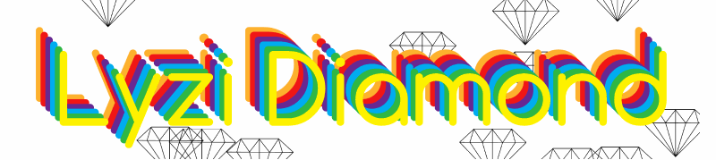
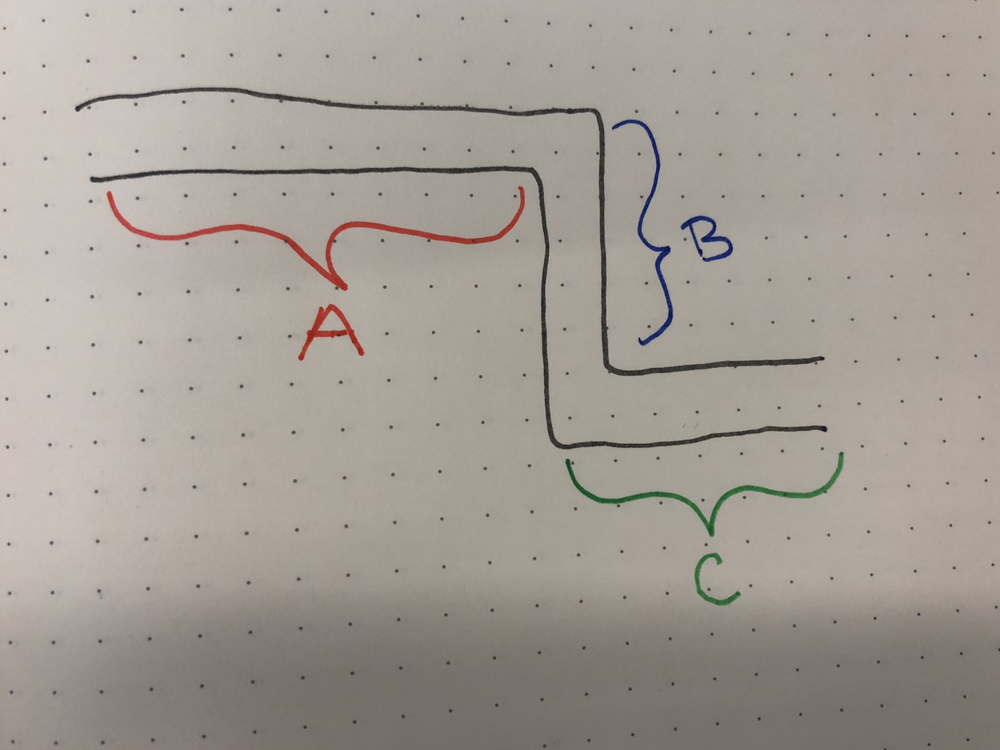

Writing technical talks: a deep dive
@lyzidiamond | Lyzi Diamond | Mapbox


Steps:
- Goals
- Self-assessment
- Outline/structure
- Slides
- Presenting
- Tips and tricks
Steps:
- Goals
- Self-assessment
- Outline/structure
- Slides
- Presenting
- Tips and tricks
Goals
A good talk starts with a goal.
"Why am I giving this talk? What do I want the audience to get out of it?"
Example goals:
- Let audience know about this cool new thing I made
- Increase understanding of a core concept
- Convince audience to do things a certain way
- What else?
Knowing the goal of your talk allows you to build toward that goal.
This is especially important with technical talks.
My goal: Provide guidance to make everyone more comfortable and successful in giving talks!
Steps:
- Goals
- Self-assessment
- Outline/structure
- Slides
- Presenting
- Tips and tricks
Self-assessment
 By TyIzaeL - Own work, CC BY-SA 4.0, https://commons.wikimedia.org/w/index.php?curid=60343464
By TyIzaeL - Own work, CC BY-SA 4.0, https://commons.wikimedia.org/w/index.php?curid=60343464As an expert expert either in a tool or field of study or just in your own experience you have unconscious competence.
Your goal when communicating: conscious competence.
So: what do you know that you don't know you know? Y'know?
For me:
- git
- handbells
- GIS
- writing talks
Write down a topic in which you have unconscious competence.
This whole talk is an exercise in this: knowing what I need to explain explicitly vs. what I can assume you know.
Steps:
- Goals
- Self-assessment
- Outline/structure
- Slides
- Presenting
- Tips and tricks
Outline/structure
Why?
- Hit all the points
- Feed your goal
- Feel more comfortable
- Increase retention
The goal here is retention. What do you want them to remember?
Ways to structure a talk:
- procedural/walk-through
- story/chronological
- five-paragraph essay
- what else?
Procedural/walk-through: good for explaining how something works or facilitating understanding.
Story/chronological: good for making your audience feel included and convincing.
Five-paragraph essay: good for showing off what you did and why it's important.
Which one is this talk?
Consider: what stories or analogies can I use to make this real for my audience?
Consider: - repetition
- repetition
- repetition
Consider: what are your limitations? (See: time.)
Steps:
- Goals
- Self-assessment
- Outline/structure
- Slides
- Presenting
- Tips and tricks
Slides
Slides should complement your outline.
In your outline, you identified a structure, some stories and analogies to use, and things you want to repeat.
How can visuals help get your point across?

Always ask yourself: How does this serve my goal?
Also, remember: repetition.
Tools:
- Keynote
- Dropbox Paper
- Google Slides
- big
- Powerpoint?
It doesn't really matter. Use whatever feels most comfortable for you!
Consider:
- shareability
- technology
- style
I like rainbows. 🌈
Steps:
- Goals
- Self-assessment
- Outline/structure
- Slides
- Presesnting
- Tips and tricks
Presenting
If you do all the work described, presenting should be a breeze.
Five things:
- introduce yourself and the talk
- slow down
- give yourself what you need
- be excited!
- repeat yourself
By introducing yourself and the talk, you are setting expectations.
Most people are only going to remember ~25% of what you say. Slow down to increase that percentage.
If you are not comfortable, your talk will not be fun to listen to. Give yourself what you need to be successful.
A deep dive is usually about something you like and know a lot about. It's okay to show your excitement about the topic -- that's what brings people in!
Have I mentioned the power of repetition?
Steps:
- Goals
- Self-assessment
- Outline/structure
- Slides
- Presesnting
- Tips and tricks
Tips and tricks
1. Identify vocabulary
unconscious competence: understanding a subject so deeply that it becomes second nature
2. Use colors
(repetition)
3. Be vulnerable
To make myself less nervous, I write my talk into my slides.
4. Get silly
5. Kill your ego
Technical and non-technical is a false dichotomy.
6. Be open to questions and critique
Critique and criticism are not the same.
7. Have a conclusion and a call-to-action
This can include:
- a recap of the talk
- reiteration of your goal
- links to learn more
- specific activities to do next
- questions to take home
8. A note on questions after talks
I usually don't take questions after talks.
Tips and tricks recap:
- Identify vocabulary
- Use colors
- Be vulnerable
- Get silly
- Kill your ego
- Be open to questions and critique
- Have a conclusion and a call-to-action
- Decide if you want to take questions
So what did we learn today?
Steps:
- Goals
- Self-assessment
- Outline/structure
- Slides
- Presenting
- Tips and tricks
Steps:
- Goals
- Self-assessment
- Outline/structure
- Slides
- Presenting
- Tips and tricks
Steps:
- Goals
- Self-assessment
- Outline/structure
- Slides
- Presenting
- Tips and tricks
Steps:
- Goals
- Self-assessment
- Outline/structure
- Slides
- Presenting
- Tips and tricks
Steps:
- Goals
- Self-assessment
- Outline/structure
- Slides
- Presenting
- Tips and tricks
Steps:
- Goals
- Self-assessment
- Outline/structure
- Slides
- Presenting
- Tips and tricks
Like anything else, giving talks requires practice. It's hard, but that's okay!
I believe in you. ✨
Questions?